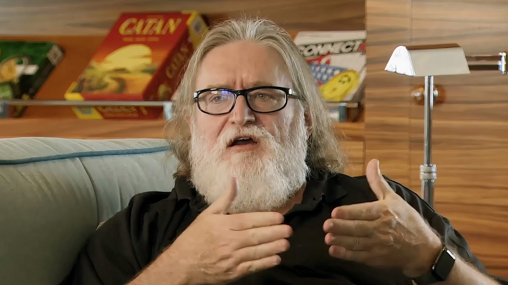

Введение
Гейб Ньюэлл — соучредитель и глава компании Valve, один из создателей культовой серии Half-Life и талантливый предприниматель. После того как Ньюэлл бросил Гарвардский университет, он тринадцать лет проработал в корпорации Microsoft, где выступил в качестве продюсера при разработке нескольких операционных систем Windows.
15 июля 2021 года Гейб Ньюэлл представил игровую платформу Steam Deck. Устройство можно будет использовать и как портативную консоль, и как полноценный PC, при этом на него получится установить любое программное обеспечение, в том числе Windows со всеми популярными игровыми магазинами.
Мы гораздо ближе к «Матрице», чем вы думаете. Я имею в виду не сам фильм — в нём упущена техническая сторона вопроса. В мире, где нейрокомпьютерные интерфейсы будут хорошо развиты, мы сможем создавать невероятный опыт для наших пользователей. Мне очень приятно работать с текущей командой. Перед нами открывается столько возможностей, что будущее выглядит очень волнующе. @Gabe Logan Newell